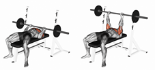
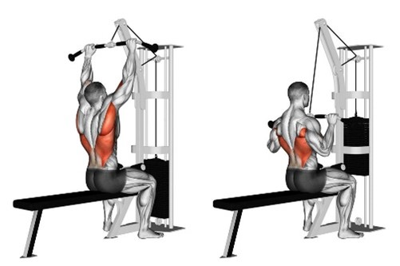
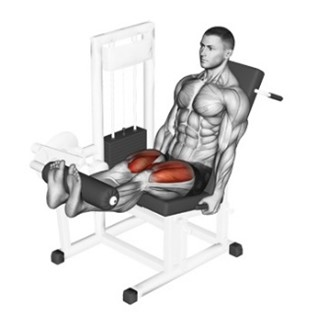

Op deze pagina ga ik vertellen over mijn hobies en intresses en ga er wat meer uitleg bij geven.
Ik doe al sinds mijn 16de aan fitness. Eerst was mijn doel afvallen, nu probeer ik sterker te worden en meer spiermassa te kweken. Natuurlijk wil ik hier ook een goede fysiek mee bereiken. Voorlopig staat mijn bench press op 100KG en squat op 140KG.
| Fitness schema | |
|---|---|
| Maandag | Chest & Triceps  |
| Dinsdag | Rustdag |
| Woensdag | Back & Biceps  |
| Donderdag | Rustdag |
| Vrijdag | Legs  |
| Zaterdag | Chest & Triceps |
| Zondag | Rustdag |
Op de eerste dag van de week doe ik chest & biceps. Mijn favoriete oefening voor chest is de bench press die doe ik dan ook als eerste. Dan ga ik over naar de incline chest press met dumbells voor de bovenste deel van de chest te trainen. Ik doe daarna graag fly's en rek de chest dan goed uit voor goede contractie te hebben. Als laatste voor chest ga ik nog bij de cables en doe daar drie verschillende chest oefeningen. Om af te sluiten doe ik dan nog een paar tricep oefeningen.
Voor back day start ik meestal met pulldown machines één met free weight en dan schakkel ik over naar de wide grip en de narrow grip lat pulldown machine. Daarna doe ik wat rows en ook bent-over rows. Ik doe wel nooit deadlift omdat ik hier meer last van krijg en omdat het in het algemeen geen gezonde oefening is. Daartussen doe ik ook dumbell rows en om mijn workout af te maken doe ik nog wat bicep oefeningen. Meestal doe ik dan wat dumbell curls, hammer curls of barbell curls.
Leg day is mijn minst favoriete workout dag die ik vroeger veel oversloeg. Maar ik ben er nu meer consistent mee geworden. Leg day is ook de moeilijkste dag waar ik heel hard van zweet. Ik start meestal met squat en ga dan over naar de leg press en leg extensions. Als laatste oefening voor legs doe ik calf raises omdat die erg vermoeiend zijn om te doen.
League of Legends is een MOBA waar twee teams van 5 personen tegen elkaar moeten vechten om elkaars basis te vernietigen om te winnen.
Ik ben League of Legends beginnen spelen in seizoen 4 en is nu waarschijnlijk het spel dat ik het meest heb gespeeld over de jaren. Ik ben het begonnen spelen omdat ik vrienden had die League of Legends aan het spelen waren waar ik de dag van vandaag nog mee speel. Ik speel vooral ADC en ik main Jhin sinds dat hij als champion uitgekomen was. de hoogste rank dat ik heb behaald is platinum.
Lost Ark is een spel dat uitgekomen is in 2019 maar alleen in Korea en in Rusland en sinds 2022 ook beschikbaar is in het westen. Lost Ark is een MMORPG waar je je eigen karakter creëert en een heel grote wereld exploreert terwijl je slechterikken vecht.
Ik ben dit spel vrij recent beginnen spelen en ben er heel verslaafd aan geraakt. De combat in dit spel is verbazingwekkend en de content van het spel zorgt er voor dat je heel lang kan blijven spelen. Op korte tijd heb ik mijn karakter tot één van de hoogste niveaus gebracht en ben ik de end game content aan het doen. Ik zit dan door mijn verslaving in de top 1% van de spelers nu.